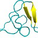

Как я могу создать 32-битную версию Atom?
спросил 8 лет, 1 месяц назад
Изменено 6 лет, 3 месяца назад
Просмотрено 11к раз
Доступен новый текстовый редактор Atom 1.0 . Но только для 64-битных процессоров. Как я могу создать 32-битную версию?
отредактировано 19 июл 2015 в 20:45

77492222 золотых значка8080 серебряных значков128128 бронзовых знаков
спросил 26 июн. 2015 в 9:55
48311 золотой значок44 серебряных значка1919 бронзовых знаков
Добавить комментарий
Отсортировано по:
Наивысший балл (по умолчанию) Дата изменения (сначала самые новые) Дата создания (сначала самые старые)
В этих инструкциях предполагается, что у вас 32-битная система:
sudo apt-get install build-essential git libgnome-keyring-dev fakeroot rpm libx11-dev libxkbfile-dev
Настройка node.js:
curl --silent --location https://deb.nodesource.com/setup_0.12 | sudo bash -
sudo apt-get install nodejs
Клонируйте репозиторий Atom:
cd
git clone https://github.com/atom/atom
Если вам нужна последняя версия:
git fetch -p
git checkout $(git describe --tags `git rev-list --tags --max-count=1`)
Теперь соберите и установите:
cd atom
sudo script/build --create-debian-package
Используйте sudoвыше, чтобы избежать ошибок отказа в разрешении во время процесса сборки. Также, если у вас возникла проблема с buildкомандой, запустите sudo update-alternatives --install /usr/bin/node node /usr/bin/nodejs 10.
Или установите Atom через PPA:
sudo add-apt-repository ppa:webupd8team/atom
sudo apt-get update
sudo apt-get install atom
отредактировано 11 ноя 2016 в 16:13
42711 золотой значок55 серебряных значков1414 бронзовых знаков
ответ дан 26 июн 2015 в 12:42
88,9к2121 золотой значок245245 серебряных значков321321 бронзовый знак
script/build дает мне эту ошибку: i.imgur.com/f7UFbVK.png
– Хорхе Б. 26 июня 2015 г., 13:09
То же самое здесь с другим плагином Atom. Попробуйте позже. Это временная проблема.
Хорошо, может быть, другой сервер в последней версии Atom для плагинов. Я обновил свой ответ.
у меня сейчас .deb32 бит
– Хорхе Б. 26 июня 2015 г., 13:36
Добавить комментарий
https://github.com/atom/atom/blob/master/docs/build-instructions/linux.md
Построй его, приятель. Как в ридми, шаг за шагом. :)
ответ дан 26 июн 2015 в 12:28
1122 бронзовых значка
Добавить комментарий
Теперь доступна 32-битная версия Atom .
Выполните следующие команды, чтобы добавить его репозиторий и установить его.
sudo add-apt-repository ppa:webupd8team/atom
sudo apt-get update
sudo apt-get install atom
ответ дан 29 апр 2017 в 11:00
5366 бронзовых значков
Добавить комментарий
Вы должны войти , чтобы ответить на этот вопрос.
Не тот ответ, который вы ищете? Просмотрите другие вопросы с пометкой
.
{kind=link}